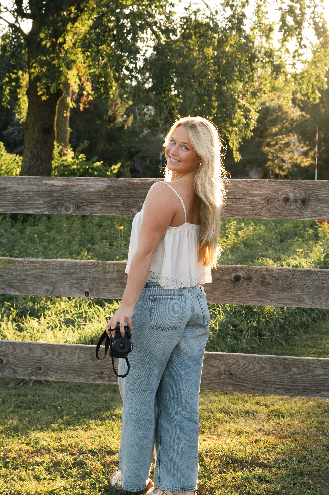
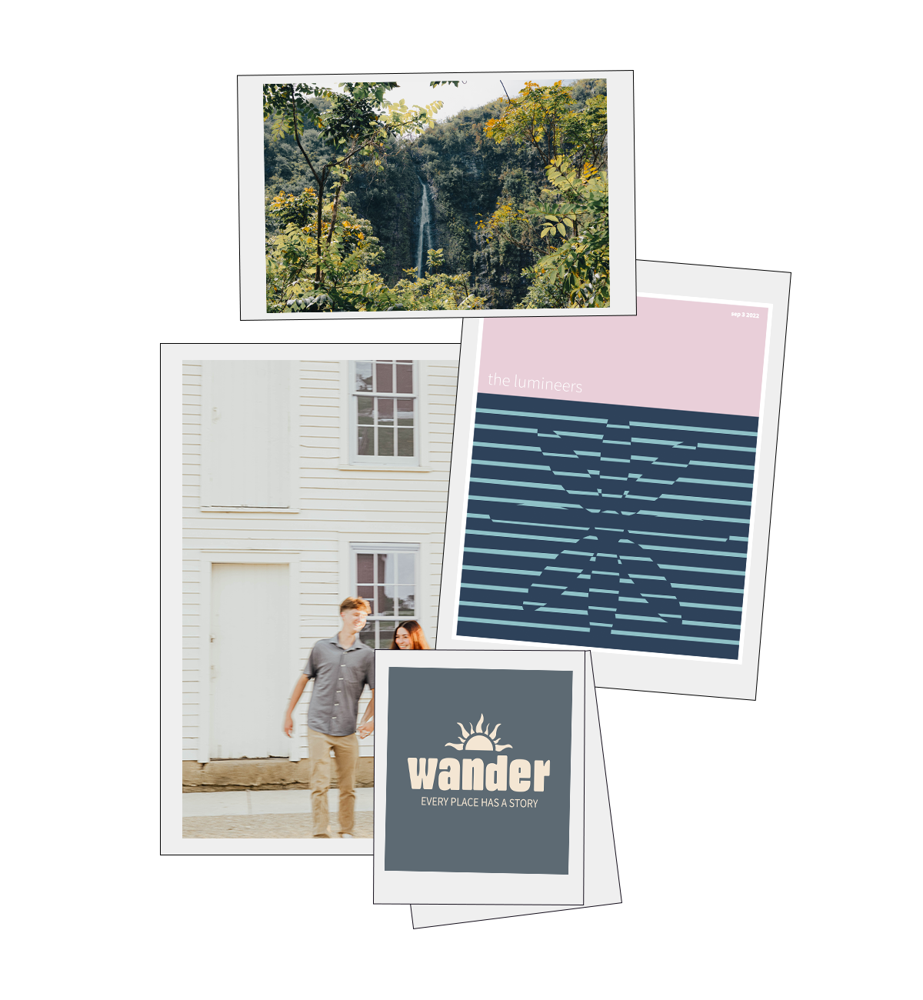

Photographer & Designer
Hi! I'm Kenzie, a senior design major at North Central College. I'm a photographer and designer who loves capturing couples and landscapes, the quiet in-between moments and the wide-open places that make you slow down. My work blends vintage style with a calm, nostalgic feel!


As a designer, I'm drawn to vintage aesthetics: classic serif type, soft faded colors, and layouts with plenty of breathing room. I love bringing the mood of my photography into my design work, so every project feels warm, nostalgic, and a little timeless.